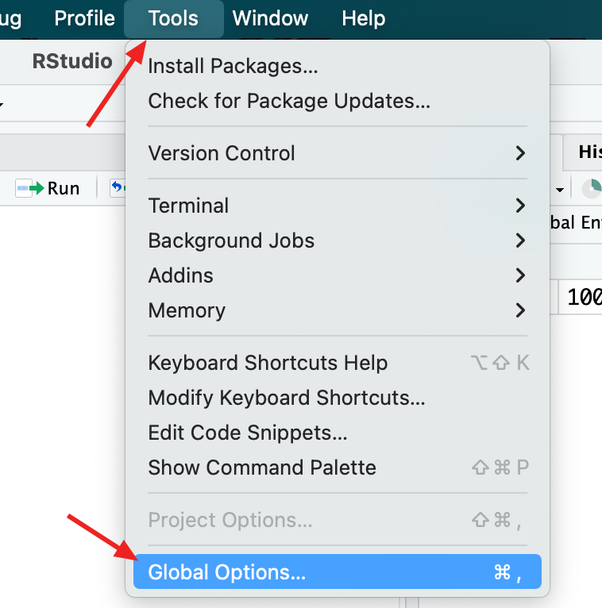
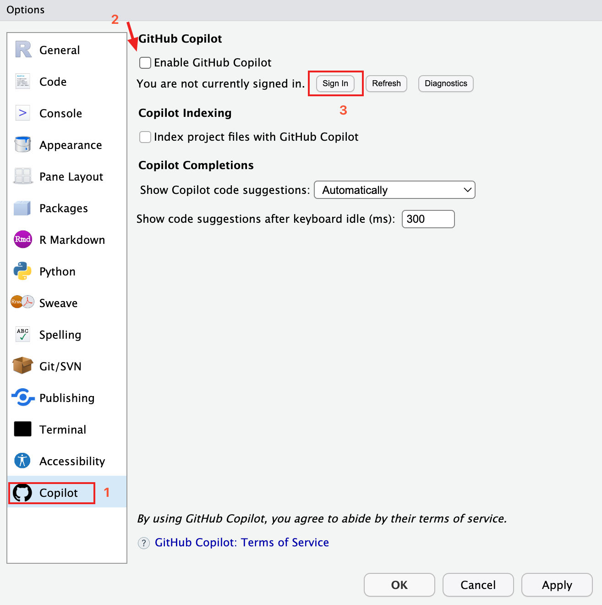
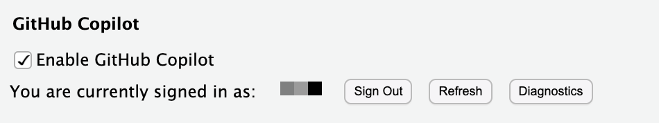
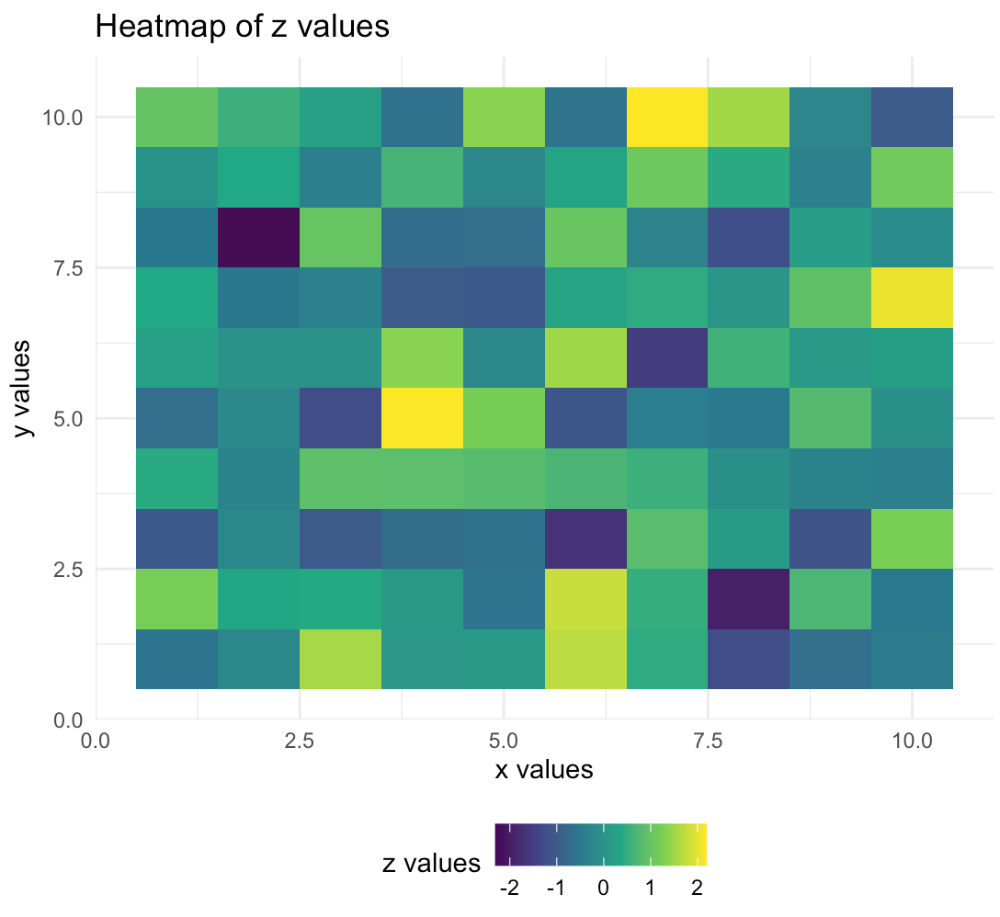

之前在VS Code中体验过Copilot的自动补全，大为震撼，但是其他IDE写R的体验都不是很好，就没有日常用起来。最近偶然一搜，发现说Rtudio里也能用Copilot的自动补全，赶紧配置了试了一下。
注：此过程适用于Mac上英文版Rstudio，并且需要保证有良好的网络环境。
配置过程
首先将Rstudio更新到最新版，打开Rsutio，由于登录GitHub可能需要良好的网络环境，因此需要先给Rtudio设置http代理。首先在Rtudio中运行以下命令，打开~/.Renviron处的一个配置文件。
file.edit('~/.Renviron')
在打开的文件中加入http代理设置如下，设置完后记得保存。
http_proxy=http://proxy.dom.com/ #代理服务器地址，或者为http_proxy=http://ip地址:端口号
http_proxy_user=user:passwd #用户名和密码，没有用户名和密码时可省略此行
随后在顶部菜单栏选择Tools - Global Options

最下面一栏直接就有Copilot的选项，选中并在顶部启用，再登录自己的GitHub账号。

如果网络条件不佳，可能会遇到GitHub登录页面打不开的情况。如果是网页上显示Congratulations, you’re all set!，但是Rsutio中还是一直在加载，说明给GitHub配置的http代理有问题。
如果步骤正确，此时会显示登录的账号名称：

这时按说就能正常使用Copilot了。
试用
我试着写了两行注释，其他部分都让Copilot帮我补全，运行正常。
# generate some data to draw heatmap <- 这行是我写的
set.seed(123)
df <- expand.grid(x = 1:10, y = 1:10)
df$z <- rnorm(nrow(df))
# load the ggplot2 package
library(ggplot2)
# draw a heat map with ggplot <- 这行也是我写的
ggplot(data = df, aes(x = x, y = y, fill = z)) +
geom_tile() +
scale_fill_viridis_c() +
theme_minimal() +
theme(legend.position = "bottom") +
labs(title = "Heatmap of z values",
x = "x values",
y = "y values",
fill = "z values")
画出的图

赶快体验一下吧。